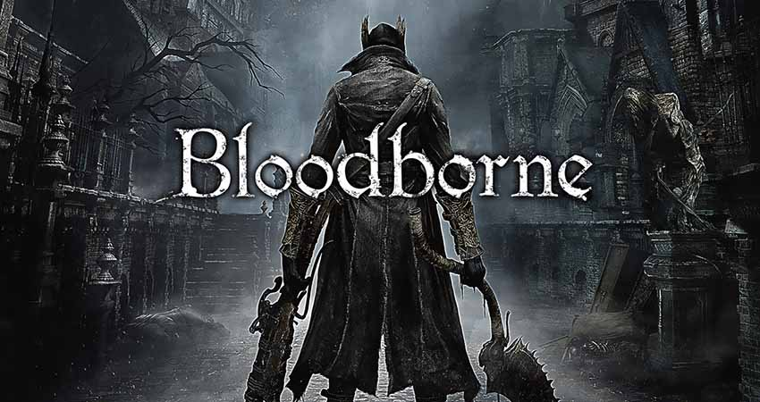

Guías
Bloodborne

Bienvenidos a nuestra guía de Bloodborne. Si hay algo por lo que son conocidos los juegos de From Software, y más concretamente los pertenecientes a la saga "Souls", es por el gran desafío que suponen, lo que suele traer consigo un gran número de muertes capaz de acabar con los nervios de los menos pacientes. Además, son títulos sin apenas tutoriales y que confían en que los usuarios sean capaces de aprender por sí mismos sus conceptos, tanto básicos como avanzados, por medio de la experimentación.
Bloodborne no es la excepción, y si bien esa barrera de entrada se ha suavizado considerablemente para hacer de él un juego mucho menos hostil para los nuevos jugadores. Sin embargo, gracias a nuestra guía encontraréis el mejor orden en el que pasarse la historia, las misiones, una explicación de los diferentes conceptos básicos de su jugabilidad, consejos para sobrevivir, recomendaciones para desarrollar y evolucionar a vuestro personaje de la mejor forma posible y un tutorial sobre el funcionamiento del modo online, de las mazmorras cáliz, y de cómo obtener los diferentes finales del juego.
The Witcher 3

The Witcher 3 es la tercera entrega de la saga The Witcher desarrollada por CD Projekt para PS4, Xbox One y Pc. Se trata de un videojuego que mezcla elementos de aventura, acción y rol en un mundo abierto épico basado en la fantasía. El jugador controlará una vez más a Geralt de Rivia, el afamado cazador de monstruos, (también conocido como el Lobo Blanco) y se enfrentará a un diversificadísimo bestiario y a unos peligros de unas dimensiones nunca vistas hasta el momento en la serie, mientras recorre los reinos del Norte. Durante su aventura, tendrá que hacer uso de un gran arsenal de armas, armaduras y todo tipo de magias para enfrentarse al que hasta ahora ha sido su mayor desafío, la cacería salvaje. Este videojuego ha sido galardonado como el mejor juego del año 2015 tanto por críticos especializados como por galas de premios como los “Golden Joystick Awards”, “Game Developers Choice Awards” y “The Game Awards”. Además cuenta con 2 DLC o Expansiones: Blood and wine, y Hearts of Stone.
Bioshock

BioShock es un juego de acción de disparos en primera persona creado por Irrational Games/2K Australia (actualmente conocidos como Ghost Story Games[1]). BioShock fue lanzado el 21 de agosto de 2007 en Norteamérica, con una edición normal y una edición limitada. Mientras explora la ciudad de Rapture en el fondo del océano Atlántico, el personaje protagonista, Jack, se verá obligado a luchar contra seres humanos mutados debido a la adicción a una sustancia genética llamada ADAM. El protagonista tendrá a su favor productos desarrollados a partir de dicha sustancia, conocidos como plásmidos, mejorando e ideando nuevas armas, y experimentando con diferentes técnicas de batalla con todas las posibilidades que ello conlleva. La filosofía, arquitectura y sociedad están basadas en la ideología del magnate Andrew Ryan, fundador de Rapture y propietario de Ryan Industries[2][3]. El juego goza de gran cantidad de críticas positivas, numerosos premios y nominaciones a estos, además de ocupar el tercer puesto en la escala de clasificación de videojuegos para Xbox 360, y el cuarto para PC